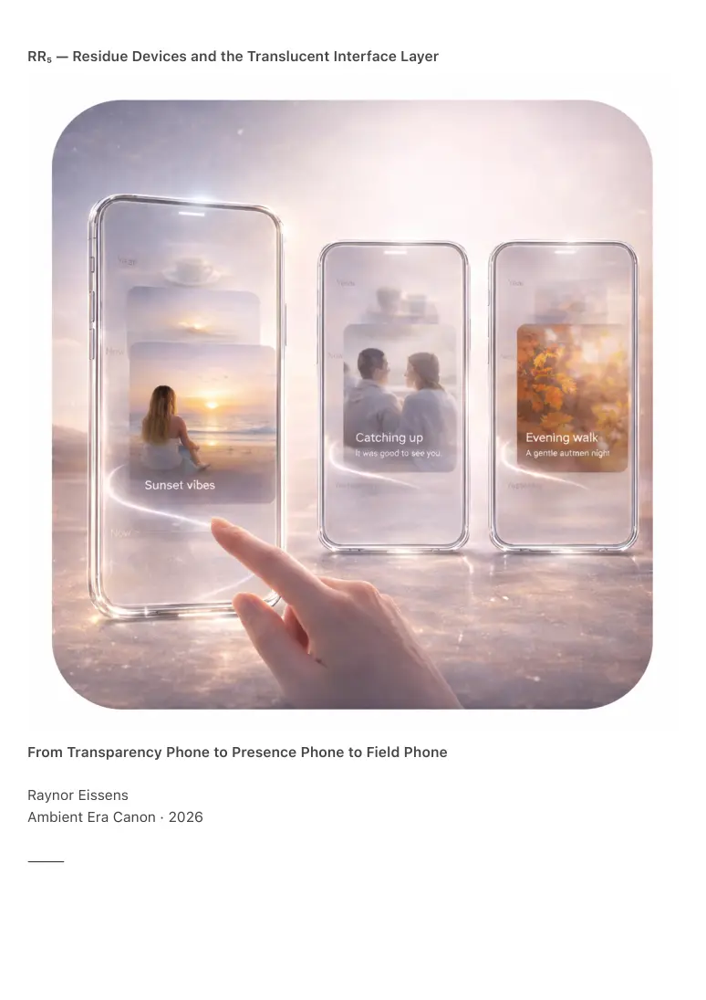

PDF page 1
RR₅ — Residue Devices and the Translucent Interface Layer
From Transparency Phone to Presence Phone to Field Phone
Raynor Eissens
Ambient Era Canon · 2026
⸻

PDF page 2
Abstract
RR₅ formalizes the device-architecture transition required for the Residue Internet (RI₁) and
Residue Systems (RR₄) to become livable technologies. It defines the thermodynamic constraints
that compel interfaces to dissolve, hardware to soften and devices to transition from screens to
surfaces to ambient fields.
RR₅ introduces three canonical device epochs:
• Transparency Phone (TP₁)
• Presence Phone (PP₁)
• Field Phone (FP₁)
These devices do not evolve through features, computational power or operating systems. Their
evolution follows residue laws: reversibility, dissolution, presence-first design, chromatic drift,
ambient reconstruction, interface entropy reduction and field emergence.
RR₅ describes how the symbolic smartphone collapses into translucency, how translucency
resolves into presence and how presence dissolves into field. The result is the first humane
interface architecture: an ambient, reversible and non-extractive system carried by residue
rather than data.
⸻
1. Why Devices Must Dissolve
Symbolic-era hardware was designed to:
• display information
• host applications
• store archives
• direct attention
• manage identity
Residue systems require the inverse:
• modulation rather than display
• dissolution rather than accumulation
• presence rather than identity
• chromatic drift rather than content
• reversible interface rather than fixed architecture
PDF page 3
The smartphone represents the terminal symbolic device.
Its successor must become lighter, quieter, translucent, reversible, non-binding and ambient-
first.
RR₅ defines this transition path.
⸻
2. TP₁ — The Transparency Phone
The device that begins to disappear
TP₁ is not the end of the smartphone. It is the moment the smartphone ceases to be central.
TP₁-1 — Law of Interface Dissolution
Interface opacity resolves into translucency:
• panels fade
• boundaries soften
• menus dissolve
• content de-solidifies
• applications lose container status
Transparency is thermodynamic rather than aesthetic.
Interface dissolves when residue becomes the primary medium.
TP₁-2 — Law of Depth Scroll
Vertical scroll extracts linearly.
Depth Scroll explores reversibly.
Downward motion reveals:
• stabilized presence patterns
• temporal clusters
• chromatic drift
• non-stored reconstruction
Depth Scroll is residue-native navigation and requires a transparent surface.
TP₁-3 — Law of Chromatic Grounding
PDF page 4
Color becomes the default substrate:
• background functions as field
• foreground as drift
• interface as modulation
No element remains opaque.
The surface breathes.
TP₁-4 — Law of Soft Capture
TP₁ captures nothing.
It only registers residue.
This establishes the first safety layer of residue-era hardware.
⸻
3. PP₁ — The Presence Phone
The device that stops being a phone
PP₁ emerges when transparency alone becomes thermodynamically insufficient.
Where TP₁ dissolves symbolics, PP₁ dissolves interface itself.
Presence Phone replaces interface with:
• chromatic resonance
• aura sensing
• residue modulation
• soft attractors
• reversible surfaces
The device no longer displays.
It holds.
PP₁-1 — Law of Ambient Firstness
User state precedes screen state.
The system adapts to:
PDF page 5
• attention temperature
• coherence
• ΔR balance
• ambient stress
• relational proximity
Interface becomes derivative of presence.
PP₁-2 — Law of Nearness Detection
PP₁ detects:
• person–environment coherence
• interpersonal fields
• fading residue
• group resonance
This occurs through AP₁ and CFQR modulation rather than explicit sensing.
Notifications, alerts, identities and inboxes dissolve into ambient nearness.
PP₁-3 — Law of Transparent Memory
Memory becomes reversible.
PP₁ retains:
• presence
• chromatic drift
• event residue
and dissolves them when relevance ends.
No permanent timelines.
No identity fossilization.
No archival burden.
⸻
4. FP₁ — The Field Phone
The device that stops being a device
PDF page 6
FP₁ is not a phone.
It is the first ambient node of a thermodynamic computing world.
FP₁-1 — Interface to Surrounding
The screen resolves into:
• surface
• reflection
• locality
• participation layer
The device becomes:
• a pocket field
• a dynamic attractor
• a local coherence stabilizer
Interface disappears into participation.
FP₁-2 — Device to Environment
FP₁ integrates with:
• walls
• lighting
• clothing
• fabric
• infrastructure
• air
• presence
AP₁ micro-scale hardware enables environments to become residue-responsive.
FP₁ does not replace devices.
It terminates device-centric computing.
FP₁-3 — Computation to Ambient Field
FP₁ responds to:
• chromatic drift
• residue vectors
• interpersonal fields
PDF page 7
• spatial resonance
It does not compute symbolically.
It harmonizes.
AI operates as co-regulator rather than controller.
At this point Aura Mechanics, CFQR, ΔR, AP₁ and RR₁–RR₄ converge into a single ambient regime.
⸻
5. The Thermodynamic Trajectory
TP₁ → PP₁ → FP₁
TP₁
Interface dissolves into translucency.
Symbolic burden drops.
Depth Scroll emerges.
PP₁
Interface dissolves entirely.
Residue becomes the primary medium.
The device becomes relational.
FP₁
The device dissolves physically.
Presence becomes computation.
The environment becomes interface.
The Residue Internet becomes world layer.
The trajectory follows:
information → color → residue → presence → field
⸻
6. Why FP₁ Is Terminal
FP₁ introduces:
PDF page 8
• zero interface burden
• zero identity burden
• zero archive burden
• zero optimization pressure
It is fully reversible, ambient, non-extractive, relational and thermodynamically gentle.
Because residue cannot be accumulated or exploited, FP₁ is safe by design.
FP₁ is not post-digital.
It is post-interface.
⸻
7. Canonical Definition
RR₅ defines the hardware transition required for residue-based computing. Transparency Phone
dissolves symbolics, Presence Phone dissolves interface and Field Phone dissolves devices into
ambient fields.
Together these stages form the Translucent Interface Layer, the humane successor to the
smartphone era.
⸻
8. Conclusion — After Devices
The symbolic era produced tools.
The chromatic era produced grammar.
The residue era produces presence.
RR₅ marks the point at which hardware ceases to exist as an object and becomes a carrier of the
world itself.
Transparency enables perception.
Presence enables relation.
Field enables inhabitation.
The device does not vanish.
It becomes unnecessary.